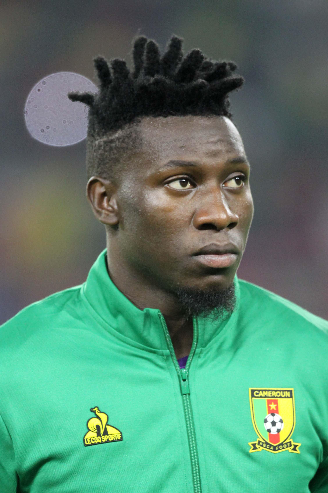

The Cameroonian professional goal keeper who played in the Netherland Eredivise for the Ajax football club
from 2016-2022 and joined the italian serie A for the inter Milan football club.
has announced his retirement from the cameroon national team. He expressed his love for the team from infantry and promised to always join the over 2 million cameroonians to support the
team in all its national matches.

As professional footballer he has recieved awards like the CAF finest XI award in 2019. The player also featured in the cameroonian national team for the 2022 wolrd cup game in Qatar.